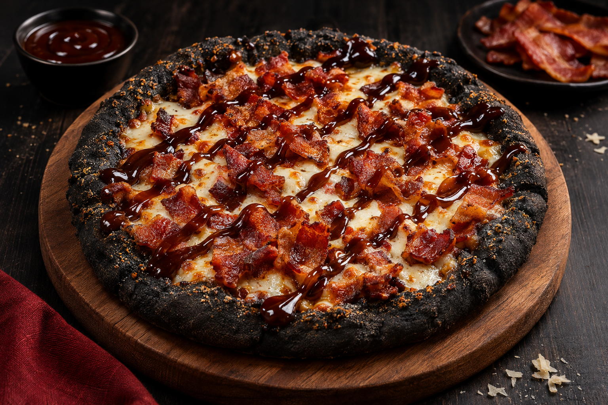
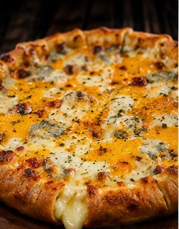

¡Bienvenido al menú, brrrrrr!
En Pizzas Anuel no vendemos cualquier comida. Aquí cada plato tiene su propio flow, ingredientes deliciosos y un sabor que está a otro nivel. Desde nuestras pizzas legendarias hasta nuestros acompañamientos más bellacos, tenemos algo para todos los gustos. ¡Real hasta la última mordida!
Nuestras Pizzas

Pizza Ozuna
Directamente desde el lado oscuro del sabor llega la Pizza Ozuna. Preparada con una exclusiva masa negra elaborada con carbón vegetal alimentario, abundante tocineta crujiente, queso mozzarella y una deliciosa salsa BBQ. Porque hasta la competencia merece una pizza, aunque sea del lado oscuro.
Precio: ₡6.500

Pizza Real Hasta la Muerte
Una pizza clásica pero poderosa, preparada con abundante pepperoni, triple queso mozzarella y bordes rellenos de queso. Una combinación que nunca te traiciona, porque aquí somos reales hasta la muerte, bebé.
Precio: ₡6.000

Pizza Bebecita
Una pizza pensada para los verdaderos amantes del queso. Preparada con mozzarella, cheddar, parmesano y queso azul, acompañada de bordes rellenos de mozzarella. Más queso que cadenas tiene Anuel en el cuello. ¡Una verdadera bebecita del sabor!
Precio: ₡5.800

Pizza Karol G
Una pizza especial en forma de corazón, preparada con jamón, queso mozzarella y un suave toque de salsa rosada. Perfecta para compartir con esa persona especial, aunque algunas historias de amor no tengan un final feliz. Porque el amor se acaba, pero el hambre nunca.
Precio: ₡5.800

Pizza Más Rica Que Ayer
Una deliciosa combinación de jamón, piña caramelizada, queso mozzarella y un toque de jalapeños. El equilibrio perfecto entre dulce, salado y picante. Porque la de hoy está más rica que la de ayer, bebé.
Precio: ₡5.900
Nuestras Pastas

Pasta Más Queso Que Ayer
Deliciosos macarrones bañados en una cremosa combinación de queso cheddar, mozzarella y parmesano, gratinados al horno hasta conseguir una capa dorada e irresistible. Porque ayer tenía queso, pero hoy tiene muchísimo más. ¡Una pasta que está más dura que ayer!
Precio: ₡4.500
Acompañamientos

Papas Las Humildes
Una generosa porción de papas fritas crujientes, cubiertas con queso cheddar derretido, abundante tocineta y nuestra salsa especial de la casa. Se llaman humildes, pero vienen más cargadas que el cuello de Anuel.
Precio: ₡2.800

Panes Real Hasta la Miga
Deliciosos panes de ajo recién horneados, cubiertos con mantequilla de ajo, especias y queso mozzarella gratinado. Crujientes por fuera y suaves por dentro. Porque aquí somos reales hasta la última migaja, bebé.
Precio: ₡2.200